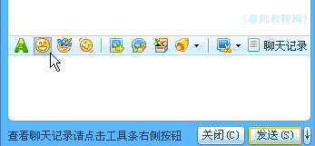
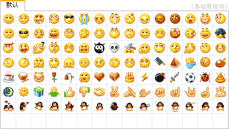
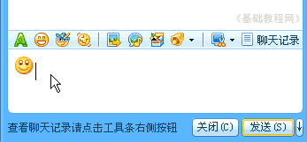
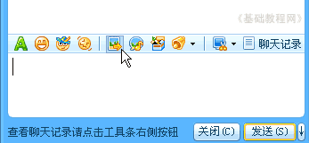
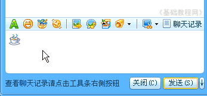
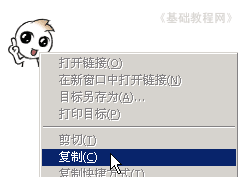
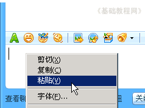

QQ聊天操作基础
一、申请QQ号 返回目录
聊天中除了文字以外，QQ里还自带了许多表情小动画图片，使得聊天更加有趣味、活泼，下面我们来看一个练习；
1、登录QQ
1）双击桌面的QQ图标运行程序，出来一个登录面板，如果自动运行就不用点桌面图标了；

2）按照从上到下的顺序，输入自己的QQ号，在第二行输入密码，如果是公用的机子，可以点击旁边的小键盘来输入，这个比较安全些；

3）下面的自动登录和隐身登录可以先不勾，点击“登录”按钮，登录成功以后就可以显示出QQ面板来；

2、发送表情
1）在面板中找到好友，双击打开聊天窗口，在输入框的上边有一排工具栏，第二个就是表情按钮；

2）点击工具栏里的表情按钮，出来一个表情面板，里面有各种表情图片，
鼠标移过去会有提示，例如第一个是“微笑”表情；

3）把鼠标移到第一个表情上，点击左键选中，这个表情就到了输入框里头，按发送就可以发出去了；

3、发送小图片
1）除了表情以外，还可以发送一些自己机子里的小图片，点工具栏中间的“发送图片”按钮；

2）在出来的打开对话框里，找到一个小图片文件，点击打开按钮，图片就到输入框里了，
点“发送”按钮，就可以发送出去了；

3）还有一种方法是，在一个打开的图片上点右键，选“复制”命令，然后到输入框里点“粘贴”，也可以把图片放到输入框里来，一般网页里可以找到许多小图片，
 
点“发送”按钮，就可以发送出去了，注意不要发送太大的图片，以免影响速度，太大的图片可以用我们后面的“传送文件”来发送；
本节学习了发送表情和小图片的基本方法，如果你成功地完成了练习，请继续学习下一课内容；
本教程由86团学校TeliuTe制作|著作权所有
基础教程网：http://teliute.org/
美丽的校园……
转载和引用本站内容，请保留版权信息和本站链接。